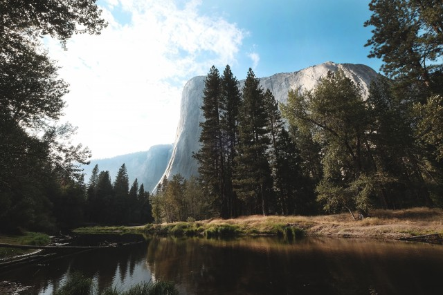

Фритрек и нулевой спринт: Подготовка к работе
Сомнения

Это было самое начало пути. На этом этапе важно было проникнуться основами и настроиться на учёбу. И, возможно, подумать, как новые знания могут повлиять на ваше будущее.
На этом этапе меня одолевали сомнения: смогу ли я добавить это в свой распорядок, хватит ли времени, действительно ли я этого хочу. Но я решил отбросить их и всё‑таки попробовать.